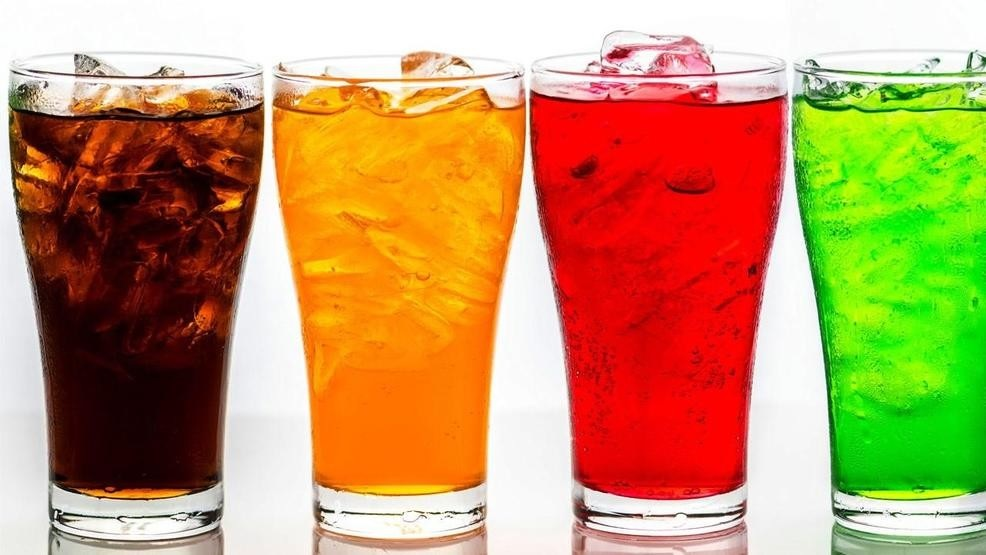
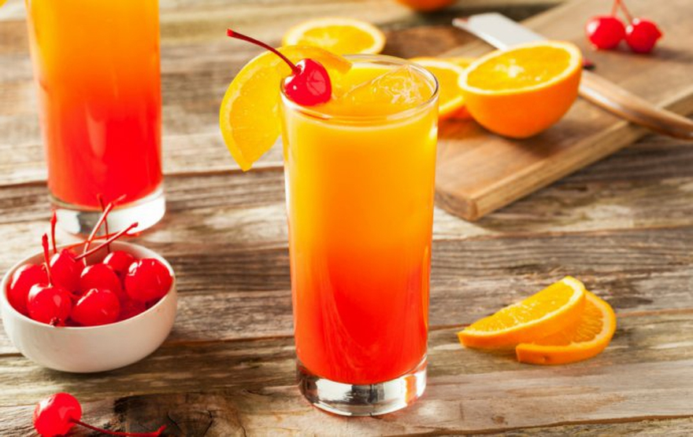
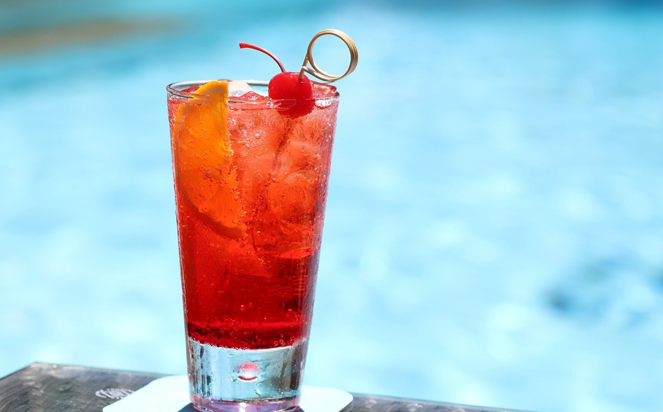
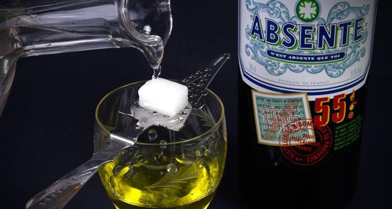

Bebida es cualquier líquido que se ingiere y aunque la bebida por excelencia es el agua, el término se refiere por antonomasia a las bebidas alcohólicas y las bebidas gaseosas. Las infusiones también son un ejemplo de uso masivo de bebidas. Los zumos sin gas también son uno de los ejemplos
 |
 |
Algunos bebidas
Bebidas alcohólicas:
Una bebida alcohólica es una bebida que contiene etanol (alcohol etílico).
Atendiendo a la elaboración se pueden distinguir entre bebidas producidas por fermentación alcohólica (vino, cerveza, hidromiel, sake) en las que el contenido en alcohol no supera los 18-20 grados, y las producidas por destilación, generalmente a partir de un producto de fermentación (licores, aguardientes, entre otros).
Bebidas gaseosas:
El término "bebida gaseosa" se utiliza para referirse a aquellas bebidas hidrocarbonatadas y sin alcohol que suelen consumirse frías. Las bebidas más comunes son la gaseosa, la cola, la limonada, el té helado, el granizado y el ponche. Muchas bebidas con gas están disponibles en una versión sin azúcar.
|  | Beneficios |
 |
| 1- Reduce el riesgo de un accidente cerebrovascular. 2- Disminuye el riesgo de cálculos biliares. 3- Disminuye el riesgo de desarrollar diabetes de tipo II. |
 | 4- Reduce la acumulación de placa ups que llevan a la enfermedad de Alzheimer. 5- Disminuye el riesgo de desarrollar úlceras de estómago. |
Batido
El batido de leche es una bebida elaborada a base de leche o helado, que puede llevar frutas, chocolate, turrón o también helado. Un factor importante que distingue un batido de la leche mezclada es que está preparado generalmente en una batidora y no simplemente mezclado a mano.
Vino
El vino es una bebida obtenida de la uva, mediante la fermentación alcohólica de su mosto o zumo. La fermentación se produce por la acción metabólica de levaduras, que transforman los azúcares naturales del fruto en etanol y gas en forma de dióxido de carbono.
Jugo o zumo
El zumo o jugo de frutas es una sustancia líquida extraída de las frutas , generalmente al exprimirlas por presión, sin embargo, puede incluir un conjunto de procesos intermedios como la: cocción, molienda o centrifugación del producto original.
Todo en exceso es malo, así que no olvides regularte con lo que consumes, en este caso con las bebidas alcoholicas.

Deje su comentario: